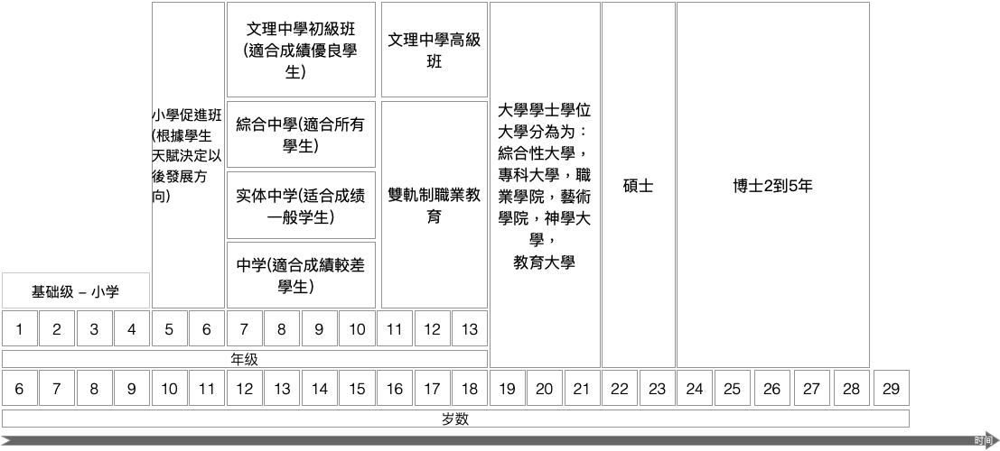

德國教育體系
德國現有八百四十萬學生以及三萬三千五百間公立學校。德國的教育系統並不是由德國政府統一安排的，而是每個聯邦州政府的文化部所安排。文化部的工作是安排教師，安排課程進度等等。這樣一來雖然很難做一致的標準，但是還有一個全德國統一的標準，就是小學的4年制制度。
多樣化的教學體制
德國教育世界領先。2015/2016年度有34000所學府招收新生。其中有一半即15500所學府是小學。普通中學3000所，實體中學2300所以及3100文理中學。經過基礎教育後，學生可以選擇職業教育或者接受426所高等學府的教育。其中有4分之1是古典綜合大學，大約佔一半比例的專科大學。特別是德國大學專業類繁多，據2017年統計德國學士學位專業有7812種，碩士專業7618種，國家或教會文憑1165種。
法定入學年齡為6歲小學基本教育4年，10歲時進入性向班, 隨後考入中學,中學按照基礎分4種(從易到難):中學,綜合中學 ,實體中學,文理中學。
德國426所大學(2016), 124所綜合大學，69%大學生就讀綜合大學(包括教育大學),216所專科大學(技術，科技等等),52所藝術大學,50所其他種類大學,公立大學屬於德國聯邦州政府，每個聯邦州自由定制教育法，經費來自聯邦政府,大學生無論國籍就讀公立大學學費全免,學生每個學期費用大約在80到500歐元左右（公共交通工具費用，報名管理費用）,房租生活費每月500歐元以上,由於德國緊缺專業人才，畢業後留德就業率極高,就業1年內可拿到長期居留, 最晚8年後可申請入籍。
高中生留學方案
來德留學的最早年齡是德國的8年級，原因是德國的文理高中對第二外語的要求。第一外語一般是英語，在5年級開始學習。而考入文理高中的學生們，在6年級時就要選擇學習第二門外語，可選語言一般有：拉丁文，法語，西班牙語，意大利語等。到8年級時學生可以選修第三們外語。
因此德國大多數寄宿文理中學針對外國的留學生進行如下入學安排：8年級，9年級或者10年級。這樣學生可以錯開6年級開始的第二外語課程，而來自外國的學生可以用中文來代替第二外語，在高中畢業前必須經過考試，一般是德國大學漢學系老師出題考試。
想要直接入讀10年級的學生，其英語，德語都要過關，否則很難跟上課程。而11年級學校一般不給名額，因為是文理中學高級班課程，難度更大，特別是外語。因此來自高一或高二的學生，一般建議入讀9年級，較為現實。
德國寄宿文理中學概述
德國寄宿學校的傳統可以追溯到19世紀。德語的寄宿學校出自拉丁文，是內部的，隱秘的意思。目前人們在德國對此隱秘優先選擇之需求越來越大。學生有不同的興趣與特長。為滿足需求，德國現有豐富而不同種類的寄宿學校。一般情況下德國國家寄宿學校由各個聯邦州負責。同時自由私立學府的數量也在不斷增多。因此，選擇一所合適的學校並不是件易事，家長與學生都必鬚根據自己的嚮往目標進行選擇。
德國的寄宿學校所做的工作是普通學校很難做到的，特別是對於每個學生人格與性格發展的引導教育超出普通學校能力所及之範圍。寄宿學校的老師們都是專業而敬業的教師。每個班裡只有少數學生，為了針對每個學生水平發展。通過每日教育與培養的合理安排，寄宿學校能夠給予年輕人在成長過程中完美的培育。孩子們能夠積累多種多樣的經驗與理論知識。
很多寄宿學校將其文化課程與課余輔導項目分開，為的是對外不屬於寄宿學校的學生而開放。學生們不僅能夠在寄宿學校里在國際多元化與文化多元化的環境中成長，而且能夠得到虛心接受批評，謙讓諒解，寬容忍耐以及德語區社會里向來傳承之認真而一絲不苟工作的能力。
克里斯蒂安馮邦哈德寄宿學校

克里斯蒂安馮邦哈德寄宿學校,德語：Christian von Bomhard Schule 歷史悠久，源頭可以追朔到文藝復興前期的14世紀教會在此教授拉丁文。到19世紀初漸漸發展為寄宿學校，現今的這所學校已是一間現代教學設施非常齊全的學校。如果想在學校里舉行現代化的五項運動，必須裝備齊全：1. 室內游泳池 2.騎術場 3. 奧林匹克田徑運動場 4.擊劍場地 5.射擊場地，這些條件此校都具備。
學校不但體育運動設施齊全，而且在自然科學領域，音樂器材方面所需的各種設備一樣具全。一間具有如此齊全設備的學校，自然可以提供豐富多彩的課余活動項目。因此邦哈德學校是一所具備所有三種學校形式的學府。在這裡學生不但可以考取13年制的Abitur，可以選擇12年制高中考取的Fachhochschulreife考入專科大學的高中畢業證書。
此寄宿學校是德國基督教基金組織贊助的學校，所以價格相對低廉，而學校要求篩選學生，報名的學生需要通過學校的心裡性向測試，根據測試結果錄取學生。
寄宿學校所有費用總和：25000歐元/每年
大學生留學方案

建議大學生在成功申請德國大學的前提下，直接申請語言學校簽證，直接在德國從零開始學德語，在語言環境下，可在9個月內達到B1水平，之後參加預科入學資格考試。注意：申請大學生留學簽證時，必須已有德國大學錄取通知書！
請參見：大使館留學簽證須知 及：申請德語強化班簽證須知考入大學預科的基本條件
- 高三畢業
- 考進中國任何一所正規大學本科並且就讀本科1學期以上
- B1或B1以上德語水平
- 高等數學，文科專業除外
預科的入學考試一般在每學期開學的前一個月舉行，與春季4月和秋季10月大學開學時間相吻合。公立預科名額一般有限，報考學生多，學校會按成績進行選拔，每個學生只有2次參加預科入學考試的機會。
語言學校德語班：每周20到30學時
德語班參考價格：580歐元/月 – 900歐元/月
生活費:4680歐元/年 – 7000歐元/年
考入德國公立預科後，一切待遇等同德國大學生， 免學費，只需100歐元到400歐元每學期的學雜費。
一年後參加年終考試，根據預科分類的不同，一般有4到6們課程需要考核
預科分類
醫學預科班: 為就讀醫學，生物學或藥劑學科等相關專業做準備。
醫學預科班課程： 德語，數學，物理，化學，生物
大學專業: 醫學，生物學，營養學，牙科醫學，微生物學，農業科學，獸醫學，生物化學，體育學，心理學，藥劑學等等。
自然科學預科班: 為就讀大學數學，自然科學或者技術科學等相關專業做準備。
自然科學預科班課程有：物理，數學，化學，德語，編程
大學專業: 物理，建築學，經濟計算機科學，化學，土木工程，計算機學，食品科技，過程工程學，數學，冶金，電氣工程，統計學，地質學，機械製造，造船術，測量學，地理，園林管理，聲音與圖片技術，材料技術，化學工程，照片工程，供電技術，紡織與印刷技術，生產技術，服裝技術，環保技術，礦物學，氣象學，等等學科。
經濟學預科班: 為就讀大學經濟學或社會學等相關專業做準備。
經濟學預科班課程: 德語, 英語, 數學, 國民經濟, 社會學, 企業經濟
大學專業:經濟學，社會學，經濟信息學，空間規劃，地理，企業經濟，社會教育學，社會工作，國民經濟，政治學，旅遊學，財政學，法律，保險業，家政學，等等學科。
人文科學預科班: 為就讀大學人文科學或日耳曼學做準備。
人文科學預科班課程： 德語，文學，歷史，社會學，
大學專業： 日耳曼語言學，法律，神學，文學，藝術，設計，考古，歷史學，藝術教育，修復學，政治學，藝術歷史，種族學，教育學，出版，新聞，哲學，音樂學，戲劇學，心理學，音樂，產品設計，等等學科。
外語學科預科班: 為外語學科做準備
外語學預科班課程：歷史，文學，社會學，德語
大學專業：現代外語，神學翻譯口譯，古典語言學，伊斯蘭學，法學，等等學科。
德語等級–歐洲共同語言參考標準
德語從入門到精通分為6個等級（歐洲共同語言參考標準／簡稱歐標），是歐盟議會在2001年11月通過的一套建議標準，為歐洲語言在評量架構和教學指引，考試，教材等方面提供的參考基準。
B1水平是考入大學預科的水平，達到B1水平最快也要9個月時間。而想要考入德國寄宿文理中學的同學們需要達到B2水平，而從零水平達到B2水平一般需要15個月。因為B1水平到B2水平的升級幅度較大，詞彙量倍增，所以需要時間較多。其他職業培訓的德語要求，如護士一般也要達到B2專業水平，也就是需要1年多左右的德語學習時間。而C1水平則是入讀大學的最低要求，也是專業人員就職的德語水平要求，如國是醫生則需要達到C1專業水準，難度超過了普通C1德語的水準，包含了醫學專業術語。